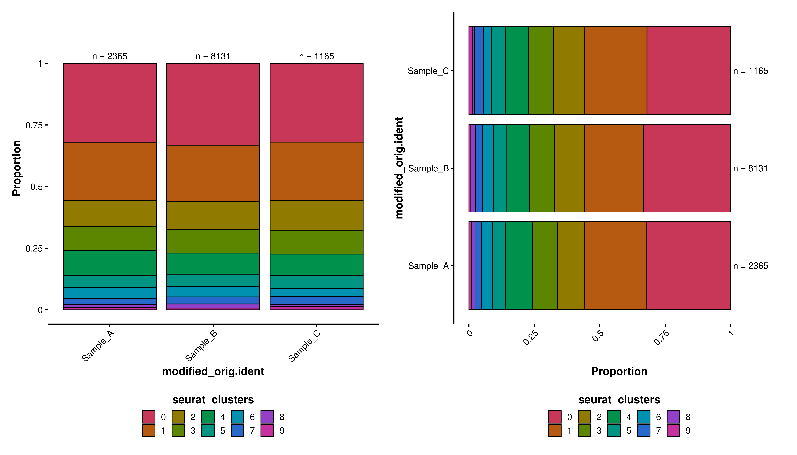

# Basic bar plot, horizontal.
p1 <- SCpubr::do_BarPlot(sample = sample,
group.by = "seurat_clusters",
legend.position = "none",
plot.title = "Number of cells per cluster")
# Basic bar plot, vertical.
p2 <- SCpubr::do_BarPlot(sample = sample,
group.by = "seurat_clusters",
legend.position = "none",
plot.title = "Number of cells per cluster",
flip = TRUE)
p <- p1 | p2
pBar plots
Bar plots are another well known data representation. They are a very handy resource to plot summary statistics. Consequently, they are part of SCpubr, available on SCpubr::do_BarPlot().
Basic usage
Using SCpubr::do_BarPlot() with only group.by yields a simple bar plot which is ordered by descending value. We can also set up the direction of the bars with flip = TRUE/FALSE, which by default is set to be vertical. There is an underlying assumption that is being taken to generate these plots:
- The values in
group.byneed to be metadata variables, stored inobject@meta.data. They have to be either a character or factor columns.
Grouping by a second variable
Let’s expand on the previous example on the number of cells per cluster. What if we were interested not only on that, but we would like to profile how many cells from each cluster are present in each of the unique samples present in the Seurat object? For this, we need to provide SCpubr::do_BarPlot() with a second parameter, split.by, that tackles how we want the feature to be grouped:
sample$modified_orig.ident <- sample(x = c("Sample_A", "Sample_B", "Sample_C"),
size = ncol(sample),
replace = TRUE,
prob = c(0.2, 0.7, 0.1))
# Split by a second variable.
p1 <- SCpubr::do_BarPlot(sample,
group.by = "seurat_clusters",
split.by = "modified_orig.ident",
plot.title = "Number of cells per cluster in each sample",
position = "stack")
p2 <- SCpubr::do_BarPlot(sample,
group.by = "modified_orig.ident",
split.by = "seurat_clusters",
plot.title = "Number of cells per sample in each cluster",
position = "stack")
p <- p1 | p2
pAs we can see, this nicely yields as many number of bars as unique values in the group.by, and this bars are segmented by as many times as unique values in split.by. At first, this is hard to grasp, but it helps thinking of these two parameters, when used together, as:
-
group.by: What I want to show as different bars, the total number of counts. -
split.by: Secondary variable on which the bars generated bygroup.bycan be further subdivided.
Representing proportions
Another interesting parameter introduced in the last example is position. Position can be either stack or fill. The difference between them is that position = "stack" will yield the total number of cells for each of the unique values in feature, while position = "fill" will bring all bars to the same height and will split each bar into the proportions within each bar of the different groups (only one if group.by = NULL and as many groups if group.by is used). To use position = fill, you must also provide a value for split.by.
p1 <- SCpubr::do_BarPlot(sample,
group.by = "seurat_clusters",
split.by = "modified_orig.ident",
position = "fill",
flip = FALSE)
p2 <- SCpubr::do_BarPlot(sample,
group.by = "seurat_clusters",
split.by = "modified_orig.ident",
position = "fill",
flip = TRUE)
p <- p1 | p2
pAdd total counts
Finally, it is also interesting to report the total number of counts for each of the bars. This is done withe following combination of parameters: - add.n: Whether you want to add the total counts or not. - add.n.expand: How much you want the axes to expand. A number that will be added on top of the fraction. If you put 0.25, then the Y axis will range from 0 to 1.25. - add.n.size: Size of the labels.
One has to play with these parameters until a suitable combination is found for the given picture, as it will greatly depend on the dimensions set for the picture.
p1 <- SCpubr::do_BarPlot(sample,
group.by = "seurat_clusters",
split.by = "modified_orig.ident",
position = "fill",
flip = FALSE,
add.n = TRUE,
add.n.size = 4)
p2 <- SCpubr::do_BarPlot(sample,
group.by = "seurat_clusters",
split.by = "modified_orig.ident",
position = "fill",
add.n = TRUE,
flip = TRUE,
add.n.size = 4)
p <- p1 | p2
p